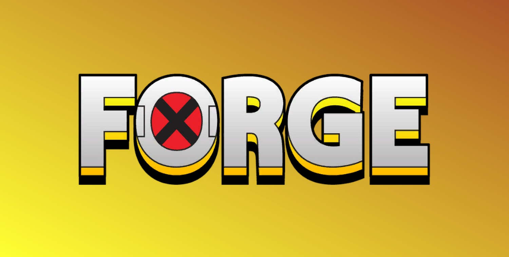
Forge (Terre-616)
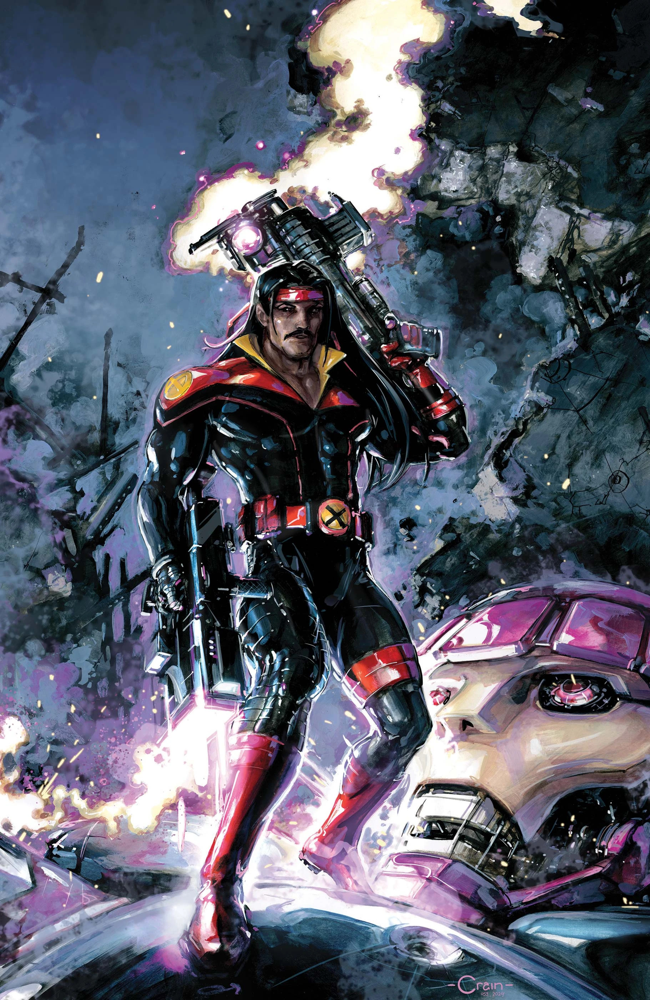
Origines :
Forge est un mutant originaire du peuple Cheyenne possédant un talent créatif exceptionnel, qui était destiné à devenir shaman de sa tribu avant de s'engager dans l'armée, au grand désarroi de son mentor Naze.
Il s'engagea lors de la Guerre du Vietnam, où il fut promut sergent.
Le S.H.I.E.L.D. l'approcha dans le but de le recruter, mais il refusa.
Pendant la guerre, son poste de commandement dut détruit par des Vietcongs, et il se retrouva encerclé avec neuf de ses camarades.
Il utilisa leurs esprits pour invoquer des démons et se débarrasser de ses adversaires, puis ordonna par radio à un B-52 de bombarder l'endroit où se trouvait le portail dimensionnel.
Il fut blessé dans l'explosion, perdant sa jambe et sa main droite.
Son invocation permit au démon connu sous le nom de l'Adversaire de venir sur Terre, et depuis ce jour, Forge évite d'utiliser ce don mystique.
Après la guerre, il tomba dans une grave dépression et tenta de mettre fin à ses jours.
Des années plus tard, Forge créa des membres cybernétiques afin de remplacer ses prothèses, et fut engagé au Ministère de la Défense après que Tony Stark ait cessé de produire de l'armement pour le compte du gouvernement américain.
Sa première mission consista à développer la technologie de détection alien, en particulier contre les Spectres Noirs.
Il inventa également un appareil annulant les pouvoirs des mutants.
Cet engin fut confié à l'agent Henry Gyrich du NSC par le Président des États-Unis.
Forge protesta, avertissant que son invention n'était qu'un prototype qui n'avait jamais été testé.
L'arme devait initialement servir contre Malicia, recherchée pour le meurtre d'un agent du SHIELD, mais ce fut Tornade qui fut touchée.
Forge sauva Tornade alors que cette dernière était tombée dans une rivière, et il la ramena chez lui, à Dallas.
Ils entamèrent une liaison, mais Ororo méprisa le mutant lorsqu'elle apprit qu'il était la cause de tous ses problèmes.
Elle le quitta et s'en alla se ressourcer en Afrique.
Forge finit par vaincre les Spectres Noirs avec l'aide des X-Men, d'Amanda Sefton et de Magik.
Il améliora son arme anti-mutation, permettant de l'utiliser à une échelle planétaire et d'envoyer tous les Spectres dans les Limbes, avant de détruire toutes ses armes, leurs prototypes et leurs plans.
Après ces événements, il se consacra à bannir l'Adversaire de la Terre.
Ce dernier utilisa une Tornade manipulée, mais la mutante retrouva rapidement ses esprits au moment où elle allait tuer l'indien, et l'Adversaire les bannit dans une dimension perdue.
Les deux mutants s'y retrouvèrent avant de reprendre leur relation.
Ils décidèrent ensuite de revenir dans leur monde et de rejoindre les X-Men pour éliminer l'Adversaire.
Cependant, pour bannir le démon, Forge dut utiliser son don mystique et sacrifier 9 vies, comme il l'avait fait durant la guerre.
Huit X-Men et Madelyne Pryor donnèrent leur vie dans ce but, mais la déesse Roma intervint en secret afin de rendre la vie aux mutants.
Magik, affectée par le mort de son frère Colossus, se vengea de Forge en l'emprisonnant dans les Limbes, mais les Nouveaux-Mutants parvinrent à la convaincre de libérer le mutant.
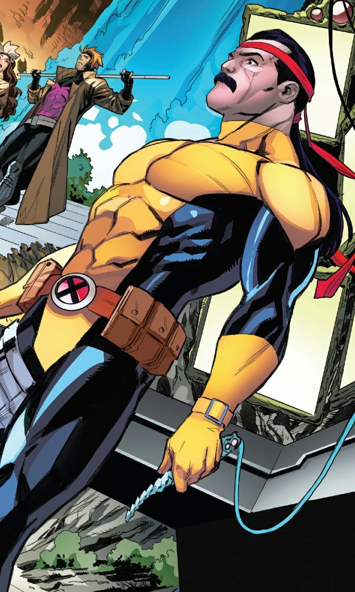
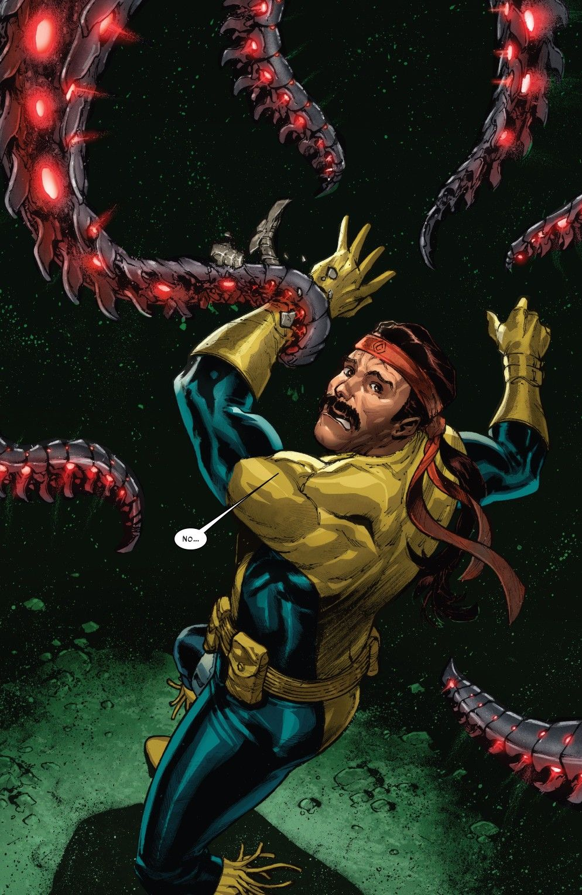
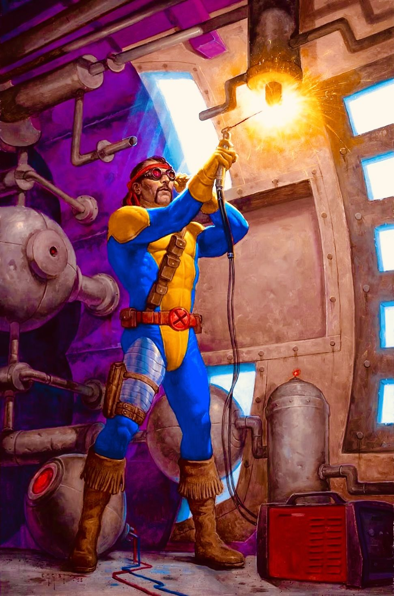
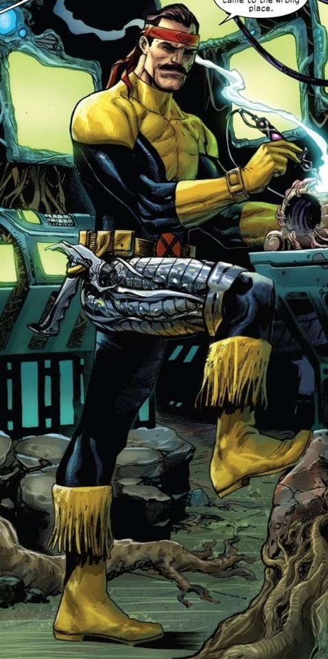
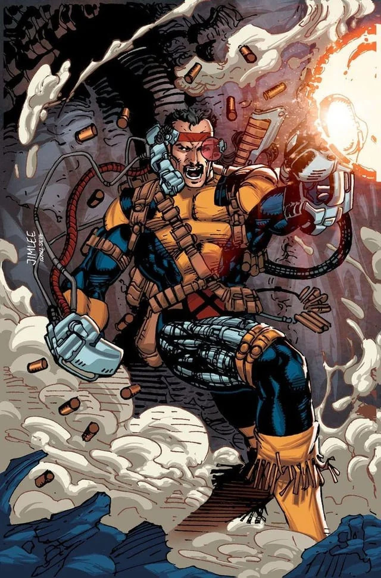
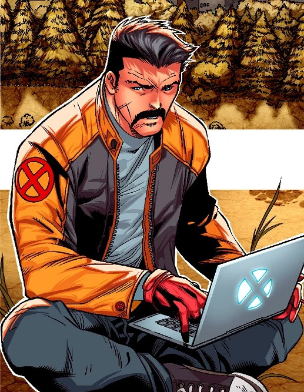
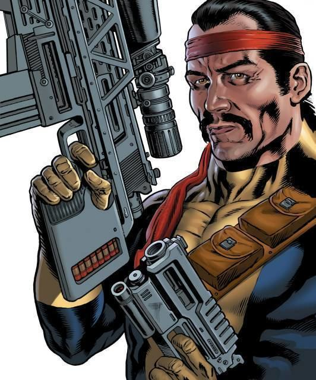
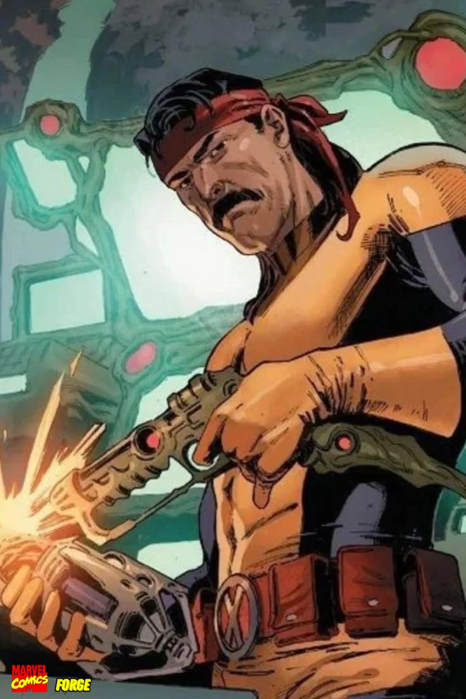
Personnalité :
Forge est un homme intelligent, ingénieux et particulièrement pragmatique.
Il possède un esprit inventif exceptionnel et préfère résoudre les problèmes par la réflexion et la technologie.
Malgré tout, Forge est un homme réservé et tourmenté par le passé, notamment par la culpabilité liée à ses actes durant la guerre.
Il possède un tempérament indépendant et méthodique, mais reste profondément loyal et dévoué envers ses compagnons.
Il est très attaché à ses racines cheyennes, et conserve un lien avec les traditions spirituelles de son peuple.
Capacités :
Forge est un mutant doté d'un talent intuitif surhumain pour l'invention de dispositifs mécaniques, renforcé par sa capacité à percevoir visuellement l'énergie mécanique en action.
Ce pouvoir lui permet de voir instinctivement le potentiel et les applications fonctionnelles de toute machine ou dispositif technologique dans son champ de vision.
Cette capacité combinée à son intelligence lui confère la capacité de concevoir, de dessiner et de construire des dispositifs mécaniques de pointe, ainsi que d'utiliser, de modifier et de désassembler des technologies existantes ou de créer des contre-mesures.

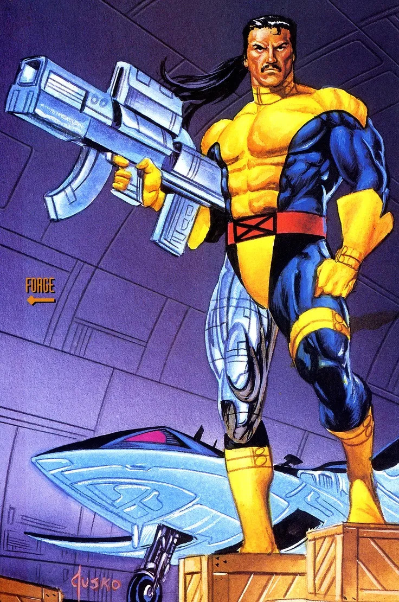
Apparence :
Forge est un homme amérindien aux cheveux noirs, généralement longs et attachés en arrière par un bandeau rouge.
Il porte souvent une barbe ou une moustache.
Il possède deux prothèses cybernétiques à la main droite et la jambe droite, qu'il a perdues pendant la guerre du Vietnam.
Son costume emblématique est composé d'une combinaison moulante jaune et bleue, accompagnée d'une ceinture rouge ornée du logo des X-Men.
Il porte également des sangles et des étuis destinés à transporter ses armes et ses outils.
Les principaux ennemis de Forge
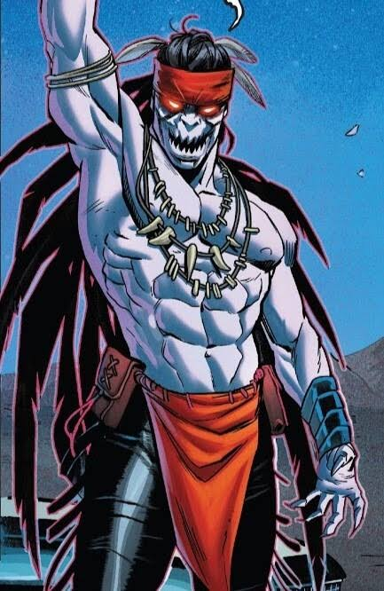

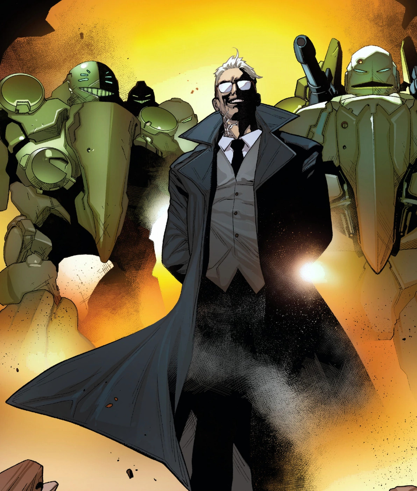

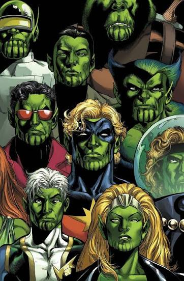
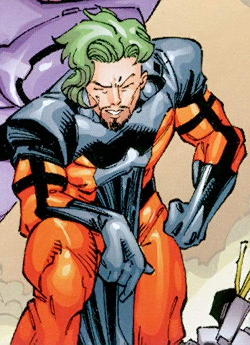
Équipes affiliées